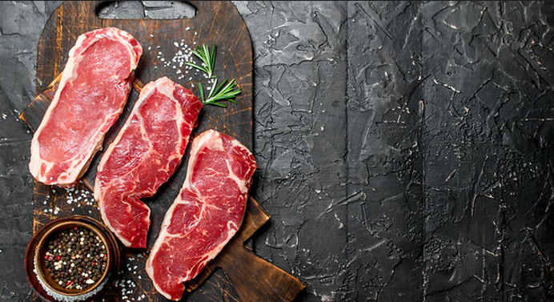
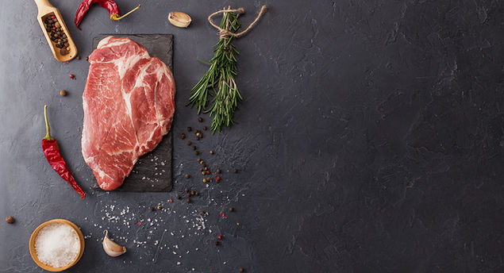

Vacuno
Revise nuestros cortes de Vacuno...

Nuestros cortes de novillo de categoría V
ofrecen una carne de alta calidad,
conocida por su terneza y jugosidad.
Revise nuestros cortes de Vacuno...

Nuestros cortes de novillo de categoría V
ofrecen una carne de alta calidad,
conocida por su terneza y jugosidad.
Revise nuestros cortes de Pollo...
El Pollo es una opción versátil y saludable,
con un sabor suave que se adapta a
diversas preparaciones.
Revise nuestros cortes de Cerdo...

La carne de Cerdo es una delicia culinaria,
muy conocida por su sabor suculento y
versatilidad.